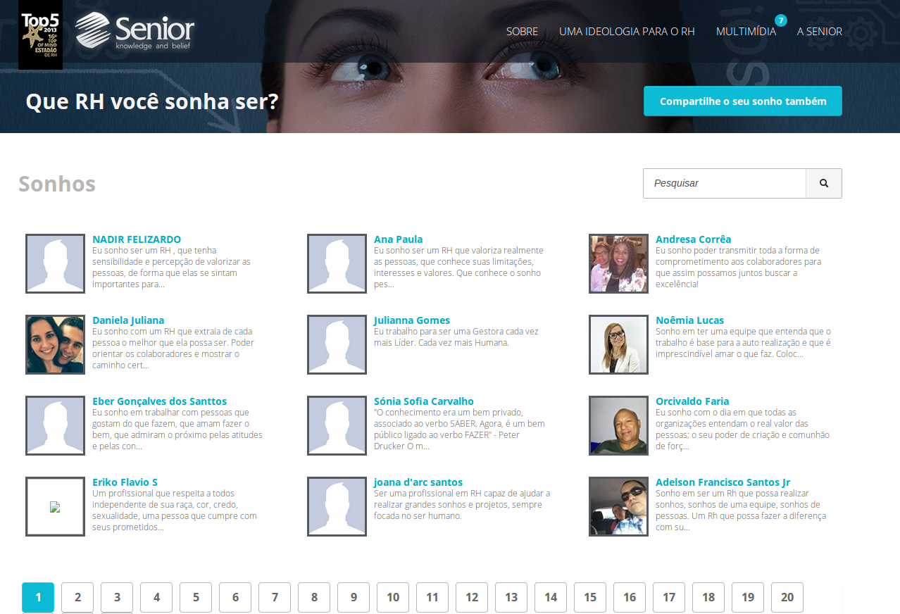
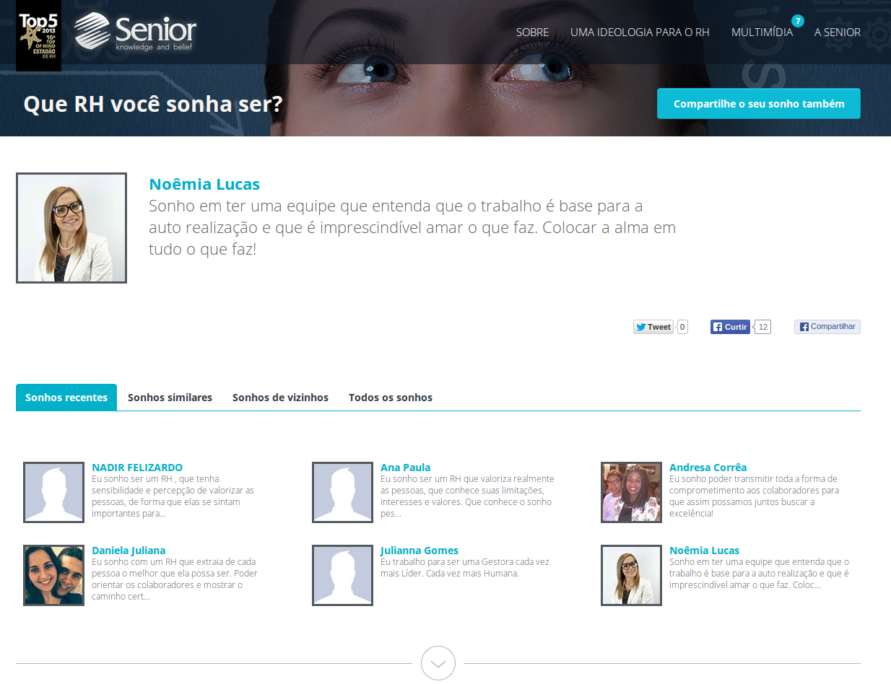

<div class="portfolio-single container">
        
    <div class="row">
    
        <div class="span8 portfolio-field portfolio-title">
            <h2>RH dos Sonhos</h2>
        </div>
        
        <div class="span4 portfolio-field portfolio-nav">
            <a class="icon button back" href="#/portfolio">close</a>
        </div>
        
        <div class="span8 portfolio-field">
            
            
            
        </div>
        
        <div class="span4 portfolio-field">
            
            <h3>Description</h3>
            
            <p>This one was a really big challenge, the deadline was short and the layout had a series of resize functionalities. I started the project using Bootstrap CSS, Slim Framework and Twig Template Engine, and did a fast development.</p>
            <p>This is one of the project that compose my deep social network integration experience, I have a lot of other projects like this, that are short marketing campaigns, that require some kind of integration and data extraction from social networks.</p>
            <p>The result was excellent, a lot of persons participated the campaign, sharing their dreams to a human resource department.</p>
            
            <h3>Client</h3>
            
            <p>SH Formwork, Scaffolding and Shoring.</p>

            <h3>Technology</h3>
            <ul class="tags">
                <li><a>HTML/CSS</a></li>
                <li><a>PHP</a></li>
                <li><a>Social Network Integration</a></li>
                <li><a>Responsive Layout</a></li>
            </ul>
  
        </div>

    </div>
</div>